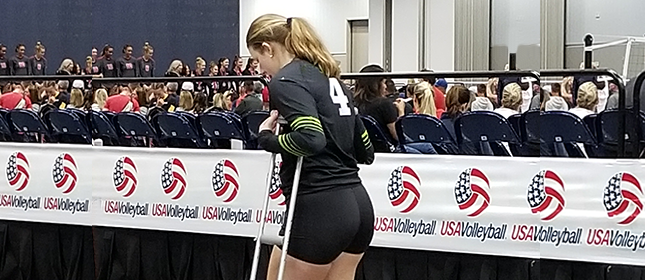
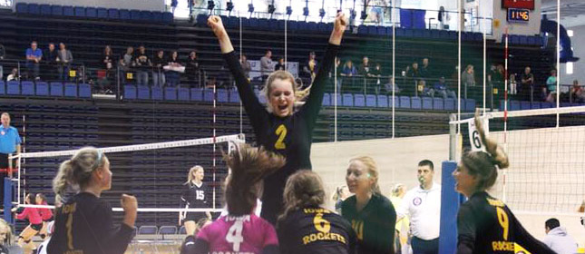
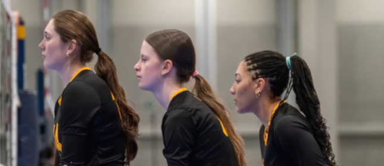
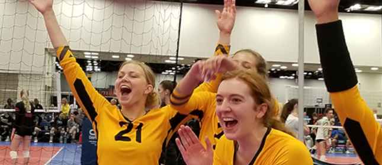

Helping you reach your potential
What do you have to gain?

Initial Consultation
Individual Sessions


Online Learning Modules
Team Sessions

Frequently Asked Questions
Mental performance consulting helps athletes and performers build skills like focus, confidence, and resilience. A consultant works with you on the mental side of training and competition—not replacing coaching, but adding tools you can use when pressure is high.
Individual athletes, coaches, and teams at many levels can benefit—youth, college, club, and professionals. If you care about performing consistently, bouncing back from mistakes, or leading under stress, you are likely a good fit for a conversation.
Both. Many clients prefer video sessions for flexibility; in-person options may be available depending on location and schedule. Your initial consultation is a good time to decide what works best for you or your team.
Individual sessions are often about 50–60 minutes. Team workshops vary based on goals and group size. The free initial consultation is scheduled for about an hour so there is time to get acquainted and outline next steps.
No long-term commitment is required to begin. After your consultation, you can book sessions as needed or follow a plan that matches your season and goals. Package options may be discussed if ongoing support makes sense for you.
Confidentiality Statement
Confidentiality & Privacy
Sabrina has worked within the Atlanta volleyball community for more than seven years and understands the importance of maintaining complete professionalism and confidentiality. Throughout that time, she has maintained a strong record of protecting the privacy and confidentiality of her clients.
All client relationships are confidential. Confidentiality is a professional and ethical commitment outlined within the Association for Applied Sport Psychology’s ethical standards that Sabrina follows as a Certified Mental Performance Consultant® (CMPC). The Mental Gain does not disclose the identity of its clients or confirm whether an individual is currently or has previously worked with Sabrina. Session discussions, performance concerns, progress, and other details related to services are also kept private and are not shared with coaches or other third parties. For clients under the age of 18, general information or progress may be shared with a parent or legal guardian outside of sessions.
The Mental Gain provides mental performance consulting, helping athletes, teams, coaches, and performers develop mental skills for performance optimization. Mental health treatment, counseling, and psychotherapy are outside the scope of services provided by The Mental Gain.